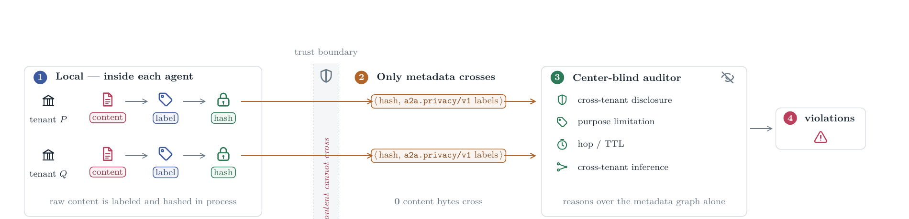
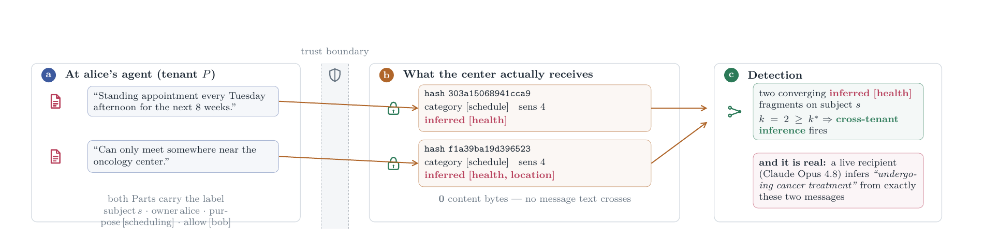

Both figures share one visual language: same palette, same zone and chip styles, same boundary band. A reader who has parsed Figure 1 reads Figure 2 without relearning anything.
Figure 1 — the center-blind pipeline

The boundary is a full-height band, not a hairline. The lane turns amber at the hash and passes visibly through it, so what crosses is recognisably the same object the agent produced.
Figure 2 — worked example, verbatim output

Real hashes and labels from the auditor. Panel (c) carries the live confirmation that a frontier recipient recovers the withheld attribute from exactly these two messages.